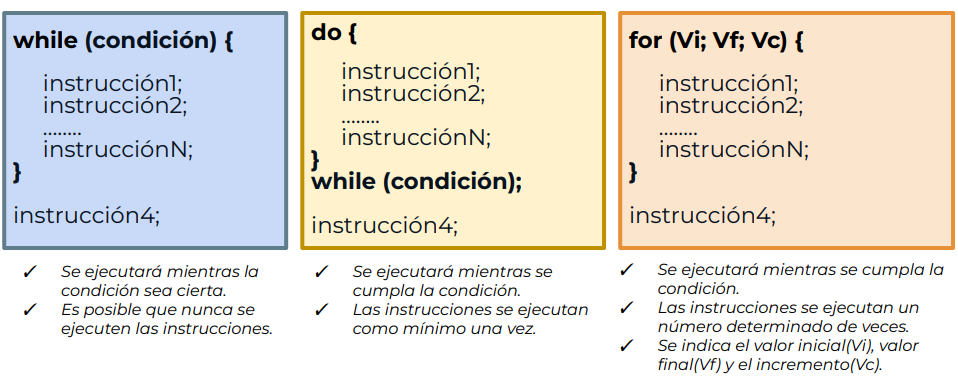
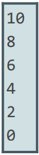
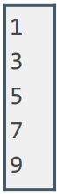
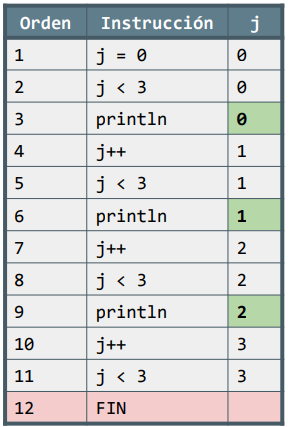
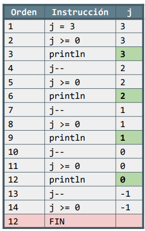

Tipos de bucles

4.1. Sentencia while
Este bucle es el que hemos usado hasta ahora, generalmente para validar el valor o formato correcto para una entrada por teclado del usuario. Esta sentencia hace que una parte del programa se repita mientras se cumpla una cierta condición:
while(i < 10) {
System.out.println("WHILE"); // Se ejecuta 10 veces.
i++;
}4.2. Sentencia do-while
En este caso, la condición se comprueba al final, lo que quiere decir que las sentencias intermedias se realizarán al menos una vez. Esto no ocurría en la construcción anterior, porque con "while" si la condición era falsa, las sentencias que contenía no llegaban a ejecutarse nunca.
Scanner teclado = new Scanner(System.in);
int num;
do {
System.out.println("Introduce un número distinto de cero para seguir en el bucle");
num = teclado.nextInt();
} while (num != 0);
Tal y como hemos estado usando nosotros el "while" hasta ahora, forzando siempre al menos una vuelta para que cuando se cumpla que el usuario ha introducido bien los datos esperados, salgamos del bucle:
boolean err=true;
while (err) {
//System.in para pedir por teclado al usuario
if(dato ok){
err=false;
}
}Ahora, habiendo conocido al do-while, no sería necesario forzar la entrada al menos una vez, sino que escribiremos el código necesario en el do y se repetirá siempre que el usuario no introduzca bien los datos que esperamos:
do{
//System.in para pedir datos por teclado al usuario
} while (dato no ok);4.3. Sentencia for
Una tercera forma de conseguir que parte de nuestro programa se repita es la orden "for". A diferencia de los bucles while, que podrían ser infinitos mientras no se cumplan las condiciones, al bucle for lo emplearemos sobre todo para conseguir un número concreto de repeticiones.
for (valor_inicial ; condicion_continuacion ; incremento) {
sentencia1;
sentencia2;
…
sentenciaN;
}Debemos indicar, entre paréntesis, y separadas por puntos y coma, tres órdenes:
- La primera orden dará el valor inicial a una variable que sirve de control.
- La segunda orden será la condición del bucle, mientras sea cierta, permaneceremos dentro del bucle.
- La tercera orden será la que se encargue de modificar la variable de control para que en algún momento la condición se deje de cumplir y el bucle termine.
for (int i = 0; i < 10; i++) { … } //10 pasadasInicialmente ‘i’ tiene como valor 0. Hay que repetir mientras se cumpla la condición, y en cada pasada por el bucle hay que aumentar el valor de ‘i’ en una unidad.
IMPORTANTE: No es necesario que declaremos la variable que utilicemos como valor de control dentro del paréntesis. Es decir, en lugar de 'i' podemos utilizar una variable que exista con anterioridad. No obstante, si declaramos el índice de control en el paréntesis, sólo podremos utilizar esta variable dentro del bucle for.
Además, si alguno de los elementos no está presente, los dos puntos y comas han de aparecer de todas formas: for (;;)
Más ejemplos:
for(int i = 10; i >= 0; i -= 2) {
System.out.println(i);
}
for (int j = 1; j < 10; j += 2){
System.out.println(j);
}
- Es muy importante tener claro el orden de ejecución de las instrucciones en un bucle for. Aquí tenéis varios ejemplos:
for(int j = 0 ; j < 3 ; j++){
System.out.println(j);
}

for(int j = 3 ; j >= 0 ; j--){
System.out.println(j);
}
| EJERCICIO: |
|
Desglosa el orden de ejecución del siguiente bucle for: |
| Orden | Instrucción | j |
| 1 | j=10 | 10 |
| 2 | ... | ... |
BONUS: sentencias "break" y "continue"
Habiéndolo conocido para switches, también se puede modificar el comportamiento de los bucles con las órdenes "break" y "continue". Ambas son de tipo de control, pero siempre dentro de bucles.
- La sentencia 'break': durante la iteración en un bucle de cualquiera de los tipos (while, do-while, for), el uso de esta sentencia rompe la iteración de dicho bucle, y el programa sale de él inmediatamente:
for(int i = 0; i<10; i++){
sentencia 1;
sentencia 2;
sentencia 3;
break;
};Este bucle debería ejecutarse 10 veces, desde i = 0 hasta i = 9. Sin embargo, la utilización de la sentencia break rompe la iteración del bucle, de tal manera que tras la primera ejecución el bucle acaba habiéndose ejecutado una sola vez.
Un código como el anterior no sirve para nada, ya que sería lo mismo que hacer las 3 sentencias fuera del bucle. Por eso, se suelen usar condiciones para la ruptura del bucle, de tal manera que un código como el anterior salga del bucle sólo si se cumple alguna circunstancia (y no siempre).
En el siguiente caso, tenemos un programa que queremos que cuente los dígitos de un número, pero solamente hasta llegar a 5 dígitos. En caso de que tenga más, dejaremos de contarlos:
int número = 4557888;
int dígitos = 0;
while ( numero > 0 ) {
numero/=10;
digitos++;
if (digitos ==5) break;
}
}- La sentencia "continue" hace que se salten las instrucciones del bucle que quedan por realizar, pero no se sale del bucle, sino que se pasa a la siguiente iteración (la siguiente "vuelta").
System.out.println("Empezamos...");
for (int i = 1 ; i <= 10 ; i++){
System.out.println("Vuelta: "+i);
if (i == 8) continue;
System.out.println("Terminada vuelta: "+i);
}
System.out.println("Terminado");En este caso, no se mostraría el texto "Terminada esta vuelta" para la pasada con i=8, pero sí se realizarían las iteraciones que faltan para i=9 y i=10.